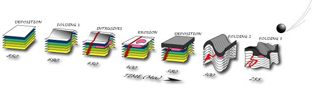

Tim: Feb 20, 2006 2:02 AM
Example illustration: (Just added this for reference of graphical interest). From;
http://www.geosci.usyd.edu.au/users/prey/FieldTrips/BrokenHillOlary/Mapping.html

So 1 & 3 are limestones.
Emil: Feb 20, 2006 2:02 AM
Looks OK. I can see the erosion by the retreating Flood waters taking place. Keep in mind the cross section was meant to show you a generalized situation with folded and slightly inclined and faulted limestones, as well as where the cave develops in that particular structure. In the cross-section legend, 1 and 3 are limestones. So in the animation we must be sure the whole of the towers are limestone even if some will be folded, some slightly inclined and some horizontal. Also, caves need to be present at several levels in the towers.
Tim: Feb 19 2006
Looking at the cross-section,
seems like we need to be showing some layers of strata (I'll just do in colors now since much easier). Is timing and degree of erosion / uplift about right? (ignore the animation fault that makes mountains appear to "roll").
CAVITY FORMATION - EMIL'S MODEL: Tim Lovett. Feb 14 2006
I think I need to know a lot more about what I'm trying to show here.
But starting from the gross detail and working down to the finer points. I want to get general water levels and terrain right first, then worry about strata and cavities second.
1. Assume water level rises, then peaks and falls. Is mountain building separate from KARST formation? How does your submerged karst correspond to Baum's tectonic plate buoyancy at the end of the Flood? What is water level doing at what parts of the karst formation? (I.E. Absolute water level - I need to correlate this frame to frame) Esp - When is the flood peak?
Anyway, here is (VERY) rough....
Get the Flash file; Emils_model02.fla (1.1MB) or zipped version Emils_model02.zip (0.9MB)
Here is gross animation for mountain building & water level.